f(x,y) = x^2 + y^2
g(x,y) = x * y
h(x,y) = sin(x) * sin(y)h (generic function with 1 method)This section uses these add-on packages:
using CalculusWithJulia
using Plots
using ForwardDiff
using SymPy
using Roots
using QuadGK
using JSONAlso, these methods from the Contour package:
import Contour: contours, levels, level, lines, coordinatesConsider a function \(f: R^n \rightarrow R\). It has multiple arguments for its input (an \(x_1, x_2, \dots, x_n\)) and only one, scalar, value for an output. Some simple examples might be:
\[ \begin{align} f(x,y) &= x^2 + y^2\\ g(x,y) &= x \cdot y\\ h(x,y) &= \sin(x) \cdot \sin(y) \end{align} \]
For two examples from real life consider the elevation Point Query Service (of the USGS) returns the elevation in international feet or meters for a specific latitude/longitude within the United States. The longitude can be associated to an \(x\) coordinate, the latitude to a \(y\) coordinate, and the elevation a \(z\) coordinate, and as long as the region is small enough, the \(x\)-\(y\) coordinates can be thought to lie on a plane. (A flat earth assumption.)
Similarly, a weather map, say of the United States, may show the maximum predicted temperature for a given day. This describes a function that take a position (\(x\), \(y\)) and returns a predicted temperature (\(z\)).
Mathematically, we may describe the values \((x,y)\) in terms of a point, \(P=(x,y)\) or a vector \(\vec{v} = \langle x, y \rangle\) using the identification of a point with a vector. As convenient, we may write any of \(f(x,y)\), \(f(P)\), or \(f(\vec{v})\) to describe the evaluation of \(f\) at the value \(x\) and \(y\)
Returning to the task at hand, in Julia, defining a scalar function is straightforward, the syntax following mathematical notation:
f(x,y) = x^2 + y^2
g(x,y) = x * y
h(x,y) = sin(x) * sin(y)h (generic function with 1 method)To call a scalar function for specific values of \(x\) and \(y\) is also similar to the mathematical case:
f(1,2), g(2, 3), h(3,4)(5, 6, -0.10679997423758245)It may be advantageous to have the values as a vector or a point, as in v=[x,y]. Splatting can be used to turn a vector or tuple into two arguments:
v = [1,2]
f(v...)5Alternatively, the function may be defined using a vector argument:
f(v) = v[1]^2 + v[2]^2f (generic function with 2 methods)A style required for other packages within the Julia ecosystem, as there are many advantages to passing containers of values: they can have arbitrary length, they can be modified inside a function, the functions can be more generic, etc.
More verbosely, but avoiding index notation, we can use multiline functions:
function g(v)
x, y = v
x * y
endg (generic function with 2 methods)Then we have
f(v), g([2,3])(5, 6)More elegantly, perhaps – and the approach we will use in this section – is to mirror the mathematical notation through multiple dispatch. If we define j for multiple variables, say with:
j(x,y) = x^2 - 2x*y^2j (generic function with 1 method)The we can define an alternative method with just a single variable and use splatting to turn it into multiple variables:
j(v) = j(v...)j (generic function with 2 methods)The we can call j with a vector or point:
j([1,2])-7or by passing in the individual components:
j(1,2)-7Following a calculus perspective, we take up the question of how to visualize scalar functions within Julia? Further, how to describe the change in the function between nearby values?
Suppose for the moment that \(f:R^2 \rightarrow R\). The equation \(z = f(x,y)\) may be visualized by the set of points in \(3\)-dimensions \(\{(x,y,z): z = f(x,y)\}\). This will render as a surface, and that surface will pass a “vertical line test”, in that each \((x,y)\) value corresponds to at most one \(z\) value. We will see alternatives for describing surfaces beyond through a function of the form \(z=f(x,y)\). These are similar to how a curve in the \(x\)-\(y\) plane can be described by a function of the form \(y=f(x)\) but also through an equation of the form \(F(x,y) = c\) or through a parametric description, such as is used for planar curves. For now though we focus on the case where \(z=f(x,y)\).
In Julia, plotting such a surface requires a generalization to plotting a univariate function where, typically, a grid of evenly spaced values is given between some \(a\) and \(b\), the corresponding \(y\) or \(f(x)\) values are found, and then the points are connected in a dot-to-dot manner.
Here, a two-dimensional grid of \(x\)-\(y\) values needs specifying, and the corresponding \(z\) values found. As the grid will be assumed to be regular only the \(x\) and \(y\) values need specifying, the set of pairs can be computed. The \(z\) values, it will be seen, are easily computed. This cloud of points is plotted and each cell in the \(x\)-\(y\) plane is plotted with a surface giving the \(x\)-\(y\)-\(z\), \(3\)-dimensional, view. One way to plot such a surface is to tessalate the cell and then for each triangle, represent a plane made up of the \(3\) boundary points.
Here is an example:
𝒇(x, y) = x^2 + y^2𝒇 (generic function with 1 method)xs = range(-2, 2, length=100)
ys = range(-2, 2, length=100)
surface(xs, ys, 𝒇)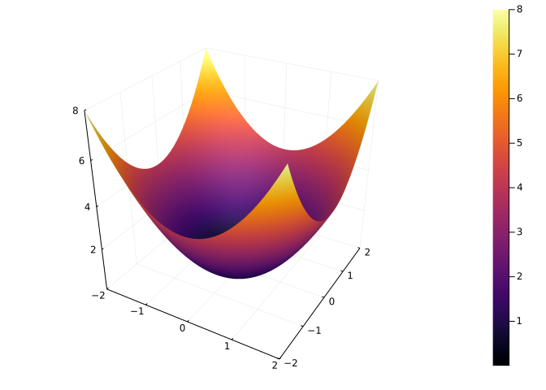
The surface function will generate the surface.
Using surface as a function name is equivalent to plot(xs, ys, f, seriestype=:surface).
We can also use surface(xs, ys, zs) where zs is not a vector, but rather a matrix of values corresponding to a grid described by the xs and ys. A matrix is a rectangular collection of values indexed by row and column through indices i and j. Here the values in zs should satisfy: the \(i\)th row and \(j\)th column entry should be \(z_{ij} = f(x_i, y_j)\) where \(x_i\) is the \(i\)th entry from the xs and \(y_j\) the \(j\)th entry from the ys.
We can generate this using a comprehension:
zs = [𝒇(x,y) for y in ys, x in xs]
surface(xs, ys, zs)If remembering that the \(y\) values go first, and then the \(x\) values in the above is too hard, then an alternative can be used. Broadcasting f.(xs,ys) may not make sense, were the xs and ys not of commensurate lengths, and when it does, this call pairs off xs and ys values and passes them to f. What is desired here is different, where for each xs value there are pairs for each of the ys values. The syntax xs' can ve viewed as creating a row vector, where xs is a column vector. Broadcasting will create a matrix of values in this case. So the following is identical to the above:
surface(xs, ys, 𝒇.(xs', ys))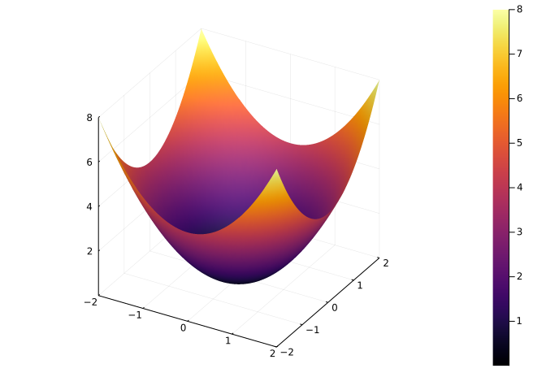
(This is still subtle. The use of the adjoint operation on ys will error if the dimensions are not square, but will produce an incorrect surface if not. It would be best to simply pass the function and let Plots handle this detail which for the alternative Makie is reversed.)
An alternate to surface is wireframe – which may not use shading in all backenends. This displays a grid in the \(x\)-\(y\) plane mapped to the surface:
xs = ys = range(-2,2, length=10) # downsample to see the frame
wireframe(xs, ys, 𝒇) # gr() or pyplot() wireplots render better than plotly()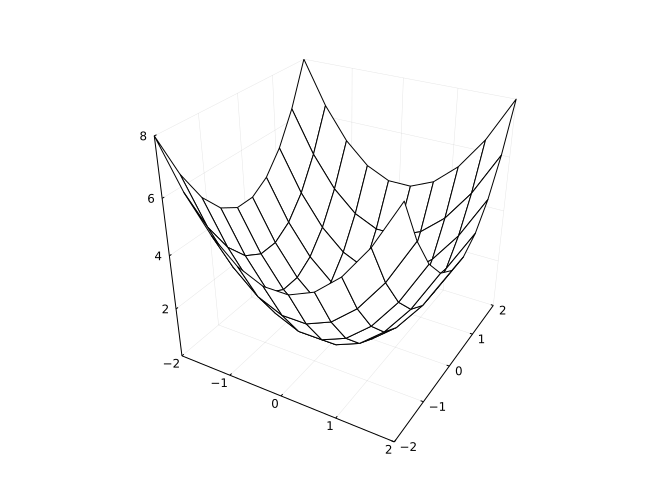
The surface \(f(x,y) = x^2 - y^2\) has a “saddle,” as this shows:
f(x,y) = x^2 - y^2
xs = ys = range(-2, 2, length=100)
surface(xs, ys, f)As mentioned. In plots of univariate functions, a dot-to-dot algorithm is followed. For surfaces, the two dots are replaced by four points, which over determines a plane. Some choice is made to partition that rectangle into two triangles, and for each triangle, the \(3\) resulting points determines a plane, which can be suitably rendered.
We can see this in the default gr toolkit by forcing the surface to show just one cell, as the xs and ys below only contain \(2\) values:
xs = [-1,1]; ys = [-1,1]
f(x,y) = x*y
surface(xs, ys, f)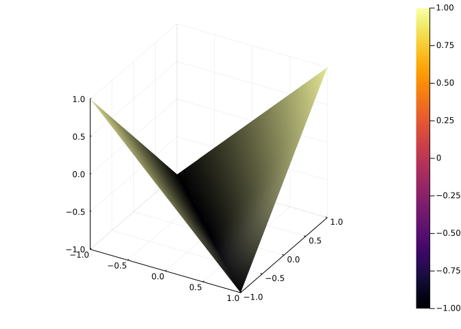
Compare this, to the same region, but with many cells to represent the surface:
xs = ys = range(-1, 1, length=100)
f(x,y) = x*y
surface(xs, ys, f)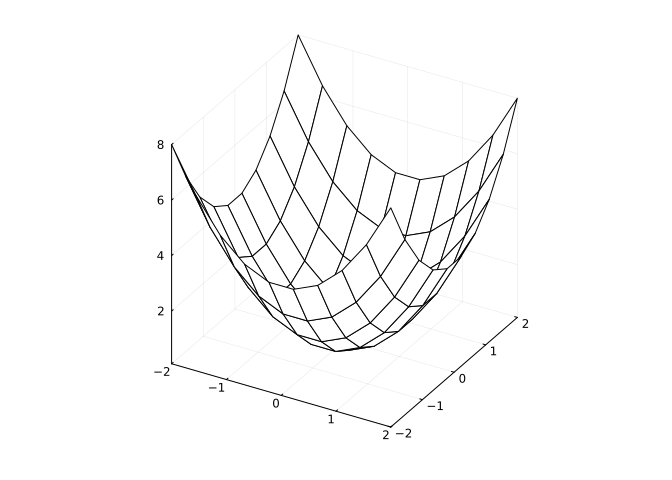
Consider the example of latitude, longitude, and elevation data describing a surface. The following graph is generated from such data, which was retrieved from the USGS website for a given area. The grid points are chosen about every \(150\)m, so this is not too fine grained.
SC = JSON.parse(somocon) # defined in a hidden cell
xsₛ, ysₛ, zsₛ = [float.(SC[i]) for i in ("xs", "ys","zs")]
zzsₛ = reshape(zsₛ, (length(xsₛ), length(ysₛ)))' # reshape to matrix
surface(xsₛ, ysₛ, zzsₛ)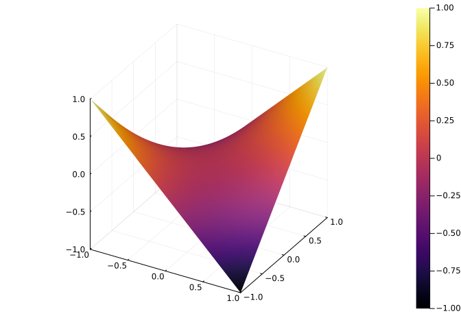
This shows a bit of the topography. If we look at the region from directly above, the graph looks different:
surface(xsₛ, ysₛ, zzsₛ, camera=(0, 90))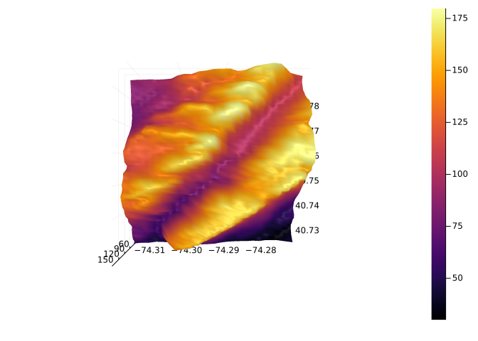
The rendering uses different colors to indicate height. A more typical graph, that is somewhat similar to the top down view, is a contour map.
For a scalar function, Define a level curve as the solutions to the equations \(f(x,y) = c\) for a given \(c\). (Or more generally \(f(\vec{x}) = c\) for a vector if dimension \(2\) or more.) Plotting a selection of level curves yields a contour graph. These are produced with contour and called as above. For example, we have:
contour(xsₛ, ysₛ, zzsₛ)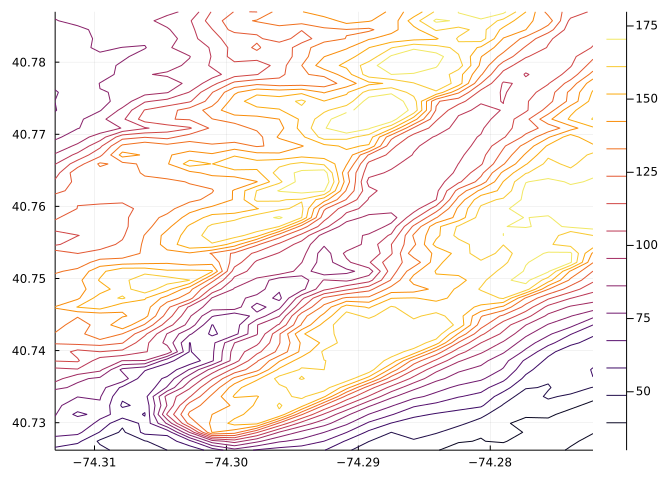
Were one to walk along one of the contour lines, then there would be no change in elevation. The areas of greatest change in elevation - basically the hills - occur where the different contour lines are closest. In this particular area, there is a river that runs from the upper right through to the lower left and this is flanked by hills.
The \(c\) values for the levels drawn may be specified through the levels argument:
contour(xsₛ, ysₛ, zzsₛ, levels=[50,75,100, 125, 150, 175])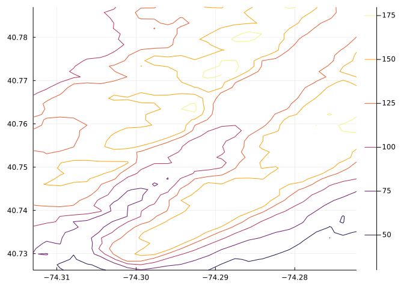
That shows the \(50\)m, \(75\)m, … contours.
If a fixed number of evenly spaced levels is desirable, then the nlevels argument is available.
contour(xsₛ, ysₛ, zzsₛ, nlevels = 5)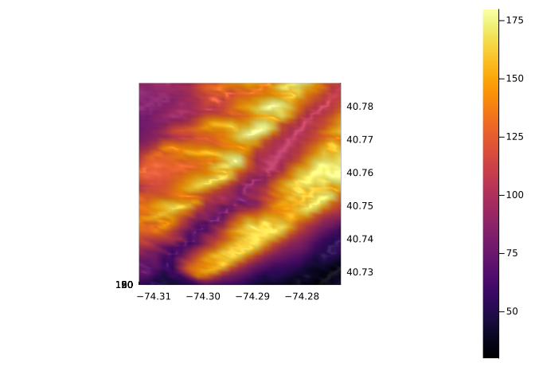
If a function describes the surface, then the function may be passed as the third value:
f(x, y) = sin(x) - cos(y)
xs = range(0, 2pi, length=100)
ys = range(-pi, pi, length = 100)
contour(xs, ys, f)An informative graphic mixes both a surface plot with a contour plot. The PyPlot package can be used to generate one, but such graphs are not readily made within the Plots framework. Here is a workaround, where the contours are generated through the Contours package. At the beginning of this section several of its methods are imported.
This example shows how to add a contour at a fixed level (\(0\) below). As no hidden line algorithm is used to hide the contour line if the surface were to cover it, a transparency is specified through alpha=0.5:
function surface_contour(xs, ys, f; offset=0)
p = surface(xs, ys, f, legend=false, fillalpha=0.5)
## we add to the graphic p, then plot
zs = [f(x,y) for x in xs, y in ys] # reverse order for use with Contour package
for cl in levels(contours(xs, ys, zs))
lvl = level(cl) # the z-value of this contour level
for line in lines(cl)
_xs, _ys = coordinates(line) # coordinates of this line segment
_zs = offset .+ (0 .* _xs)
plot!(p, _xs, _ys, _zs, alpha=0.5) # add curve on x-y plane
end
end
p
end
xs = ys = range(-pi, stop=pi, length=100)
f(x,y) = 2 + sin(x) - cos(y)
surface_contour(xs, ys, f)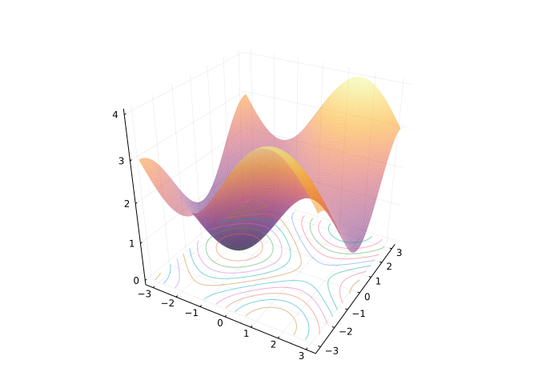
We can see that at the minimum of the surface, the contour lines are nested closed loops with decreasing area.
The figure shows a weather map from \(1943\) with contour lines based on atmospheric pressure. These are also know as isolines.
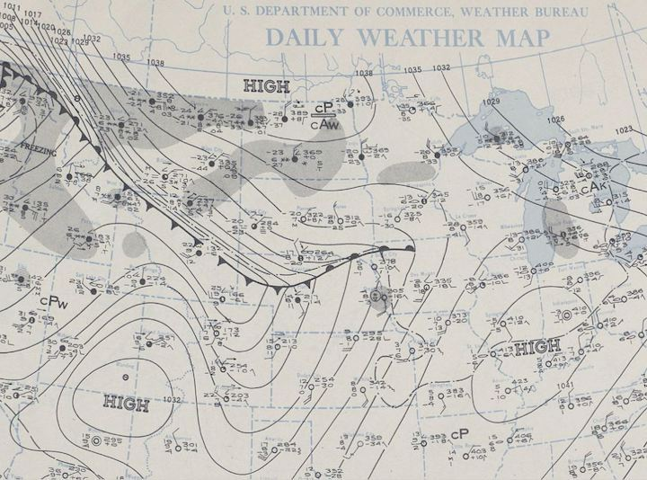
This day is highlighted as “The most notable temperature fluctuations occurred on January 22, 1943 when temperatures rose and fell almost 50 degrees in a few minutes. This phenomenon was caused when a frontal boundary separating extremely cold Arctic air from warmer Pacific air rolled like an ocean tide along the northern and eastern slopes of the Black Hills.”
This frontal boundary is marked with triangles and half circles along the thicker black line. The tight spacing of the contour lines above that marked line show a big change in pressure in a short distance.
Sea surface temperature varies with latitude and other factors, such as water depth. The following figure shows average temperatures for January 1982 around Australia. The filled contours allow for an easier identification of the ranges represented.
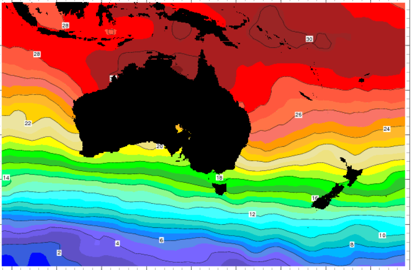
The filled contour and the heatmap are related figures to a simple contour graph. The heatmap uses a color gradient to indicate the value at \((x,y)\):
f(x,y) = exp(-(x^2 + y^2)/5) * sin(x) * cos(y)
xs= ys = range(-pi, pi, length=100)
heatmap(xs, ys, f)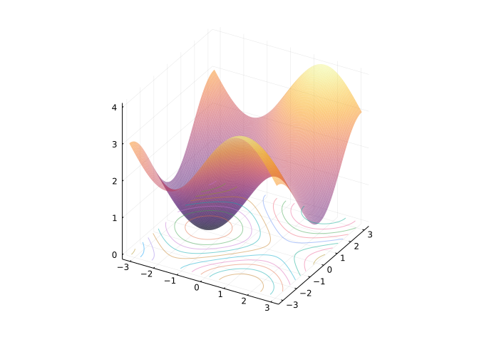
The filled contour layers on the contour lines to a heatmap:
f(x,y) = exp(-(x^2 + y^2)/5) * sin(x) * cos(y)
xs= ys = range(-pi, pi, length=100)
contourf(xs, ys, f)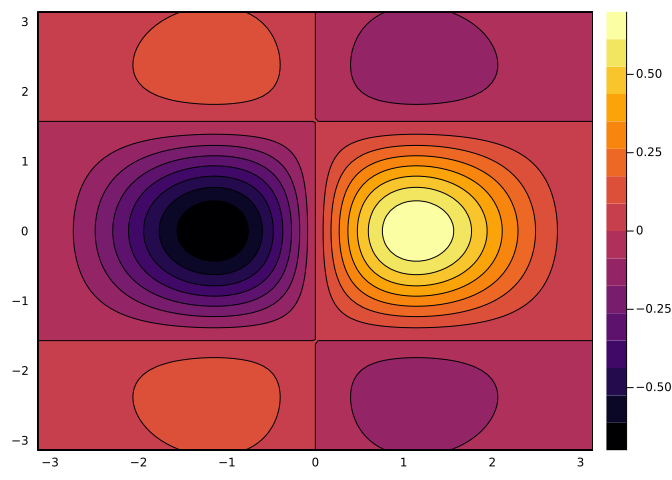
This function has a prominent peak and a prominent valley, around the middle of the viewing window. The nested contour lines indicate this, and the color key can be used to identify which is the peak and which the valley.
The notion of a limit for a univariate function: as \(x\) gets close to \(c\) then \(f(x)\) gets close to \(L\), needs some modification:
Let \(f: R^n \rightarrow R\) and \(C\) be a point in \(R^n\). Then \(\lim_{P \rightarrow C}f(P) = L\) if for every \(\epsilon > 0\) there exists a \(\delta > 0\) such that \(|f(P) - L| < \epsilon\) whenever \(0 < \| P - C \| < \delta\).
(If \(P=(x_1, x_2, \dots, x_n)\) we use \(f(P) = f(x_1, x_2, \dots, x_n)\).)
This says, informally, for any scale about \(L\) there is a “ball” about \(C\) (not including \(C\)) for which the images of \(f\) always sit in the ball. Formally we define a ball of radius \(r\) about a point \(C\) to be all points \(P\) with distance between \(P\) and \(C\) less than \(r\). A ball is an open set. An open is a set \(U\) such that for any \(x\) in \(U\), there is a radius \(r\) such that the ball of radius \(r\) about \(x\) is still within \(U\). An open set generalizes an open interval. A closed set generalizes a closed interval. These are defined by a set that contains its boundary. Boundary points are any points that can be approached in the limit by points within the set.
In the univariate case, it can be useful to characterize a limit at \(x=c\) existing if both the left and right limits exist and the two are equal. Generalizing to getting close in \(R^m\) leads to the intuitive idea of a limit existing in terms of any continuous “path” that approaches \(C\) in the \(x\)-\(y\) plane has a limit and all are equal. Let \(\gamma\) describe the path, and \(\lim_{s \rightarrow t}\gamma(s) = C\). Then \(f \circ \gamma\) will be a univariate function. If there is a limit, \(L\), then this composition will also have the same limit as \(s \rightarrow t\). Conversely, if for every path this composition has the same limit, then \(f\) will have a limit.
The “two path corollary” is a trick to show a limit does not exist - just find two paths where there is a limit, but they differ, then a limit does not exist in general.
Continuity is defined in a familiar manner: \(f(P)\) is continuous at \(C\) if \(\lim_{P \rightarrow C} f(P) = f(C)\), where we interpret \(P \rightarrow C\) in the sense of a ball about \(C\).
As with univariate functions continuity will be preserved under function addition, subtraction, multiplication, and division (provided there is no dividing by \(0\)). With this, all these functions are continuous everywhere and so have limits everywhere:
\[ f(x,y) = \sin(x + y), \quad g(x,y,z) = x^2 + y^2 + z^2, \quad h(w, x,y,z) = \sqrt{w^2 + x^2 + y^2 + z^2}. \]
Not all functions will have a limit though. Consider \(f(x,y) = 2x^2/(x^2+y^2)\) and \(C=(0,0)\). It is not defined at \(C\) (dividing by \(0\)), but may have a limit at \(C\). Consider the path \(x=0\) (the \(y\)-axis) parameterized by \(\vec\gamma(t) = \langle 0, t\rangle\). Along this path \((f\circ \vec\gamma)(t) = 0/t^2 = 0\) so will have a limit of \(0\). If the limit of \(f\) exists it must be \(0\). But, along the line \(y=0\) (the \(x\) axis) parameterized by \(\vec{\gamma}(t) = \langle t, 0 \rangle\), the function simplifies to \((f\circ\vec\gamma)(t)=2\), so would have a limit of \(2\). As the limit along different paths is different, this function has no limit in general.
If is not enough that a limit exist along many paths to say a limit exists in general. It must be all paths and be equal. An example might be this function:
\[ f(x,y) = \begin{cases} (x + y)/(x-y) & x \neq y,\\ 0 & x = y \end{cases} \]
At \(\vec{0}\) this will not have a limit. However, along any line \(y=mx\) we have a limit. If \(m=1\) the function is constantly \(0\), and so has the limit. If \(m \neq 1\), then we get \(f(x, y) = f(x, mx) = (1 + m)/(1-m)\), a constant So for each \(m\) there is a different limit. Consequently, the scalar function does not have a limit.
Discussing the behaviour of a scalar function along a path is described mathematically through composition. If \(\vec\gamma(t)\) is a path in \(R^n\), then the composition \(f \circ \vec\gamma\) will be a univariate function. When \(n=2\), we can visualize this composition directly, or as a \(3\)-D path on the surface given by \(\vec{r}(t) = \langle \gamma_1(t), \gamma_2(t), \dots, \gamma_n(t), (f \circ \vec\gamma)(t) \rangle\).
f₁(x,y) = 2 - x^2 - 3y^2
f₁(x) = f₁(x...)
γ₁(t) = 2 * [t, -t^2] # use \gamma[tab]
x₁s = y₁s = range(-1, 1, length=100)
surface(x₁s, y₁s, f₁)
r3₁(t) = [γ₁(t)..., f₁(γ₁(t))] # to plot the path on the surface
plot_parametric!(0..1/2, r3₁, linewidth=5, color=:black)
r2₁(t) = [γ₁(t)..., 0]
plot_parametric!(0..1/2, r2₁, linewidth=5, color=:black) # in the $x$-$y$ plane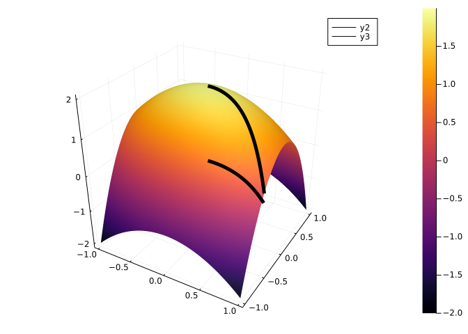
The vector valued function r3(t) = [γ(t)..., f(γ(t))] takes the \(2\)-dimensional path specified by \(\vec\gamma(t)\) and adds a third, \(x\), direction by composing the position with f. In this way, a \(2\)-D path is visualized with a \(3\)-D path. This viewpoint can be reversed, as desired.
However, the composition, \(f\circ\vec\gamma\), is a univariate function, so this can also be visualized by
plot(f₁ ∘ γ₁, 0, 1/2)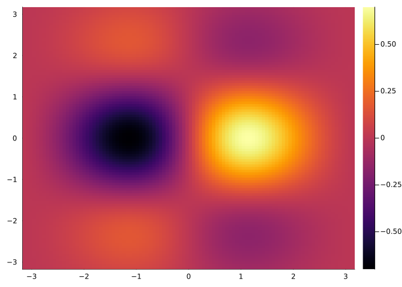
With this graph, we might be led to ask about derivatives or rates of change. For this example, we can algebraically compute the composition:
\[ (f \circ \vec\gamma)(t) = 2 - (2t) - 3(-2t^2)^2 = 2 - 2t +12t^4 \]
From here we clearly have \(f'(t) = -2 + 48t^3\). But could this be computed in terms of a “derivative” of \(f\) and the derivative of \(\vec\gamma\)?
Before answering this, we discuss directional derivatives along the simplified paths \(\vec\gamma_x(t) = \langle t, c\rangle\) or \(\vec\gamma_y(t) = \langle c, t\rangle\).
If we compose \(f \circ \vec\gamma_x\), we can visualize this as a curve on the surface from \(f\) that moves in the \(x\)-\(y\) plane along the line \(y=c\). The derivative of this curve will satisfy:
\[ \begin{align} (f \circ \vec\gamma_x)'(x) &= \lim_{t \rightarrow x} \frac{(f\circ\vec\gamma_x)(t) - (f\circ\vec\gamma_x)(x)}{t-x}\\ &= \lim_{t\rightarrow x} \frac{f(t, c) - f(x,c)}{t-x}\\ &= \lim_{h \rightarrow 0} \frac{f(x+h, c) - f(x, c)}{h}. \end{align} \]
The latter expresses this to be the derivative of the function that holds the \(y\) value fixed, but lets the \(x\) value vary. It is the rate of change in the \(x\) direction. There is special notation for this:
\[ \begin{align} \frac{\partial f(x,y)}{\partial x} &= \lim_{h \rightarrow 0} \frac{f(x+h, y) - f(x, y)}{h},\quad\text{and analogously}\\ \frac{\partial f(x,y)}{\partial y} &= \lim_{h \rightarrow 0} \frac{f(x, y+h) - f(x, y)}{h}. \end{align} \]
These are called the partial derivatives of \(f\). The symbol \(\partial\), read as “partial”, is reminiscent of “\(d\)”, but indicates the derivative is only in a given direction. Other notations exist for this:
\[ \frac{\partial f}{\partial x}, \quad f_x, \quad \partial_x f, \]
and more generally, when \(n\) may be \(2\) or more,
\[ \frac{\partial f}{\partial x_i}, \quad f_{x_i}, \quad f_i, \quad \partial_{x_i} f, \quad \partial_i f. \]
The gradient of a scalar function \(f\) is the vector comprised of the partial derivatives:
\[ \nabla f(x_1, x_2, \dots, x_n) = \langle \frac{\partial f}{\partial x_1}, \frac{\partial f}{\partial x_2}, \dots, \frac{\partial f}{\partial x_n} \rangle. \]
As seen, the gradient is a vector-valued function, but has, also, multivariable inputs. It is a function from \(R^n \rightarrow R^n\).
Let \(f(x,y) = x^2 - 2xy\), then to compute the partials, we just treat the other variables like a constant. (This is consistent with the view that the partial derivative is just a regular derivative along a line where all other variables are constant.)
Then
\[ \begin{align} \frac{\partial (x^2 - 2xy)}{\partial x} &= 2x - 2y\\ \frac{\partial (x^2 - 2xy)}{\partial y} &= 0 - 2x = -2x. \end{align} \]
Combining, gives \(\nabla{f} = \langle 2x -2y, -2x \rangle\).
If \(g(x,y,z) = \sin(x) + z\cos(y)\), then
\[ \begin{align} \frac{\partial g }{\partial x} &= \cos(x) + 0 = \cos(x),\\ \frac{\partial g }{\partial y} &= 0 + z(-\sin(y)) = -z\sin(y),\\ \frac{\partial g }{\partial z} &= 0 + \cos(y) = \cos(y). \end{align} \]
Combining, gives \(\nabla{g} = \langle \cos(x), -z\sin(y), \cos(y) \rangle\).
Two different methods are described, one for working with functions, the other symbolic expressions. This mirrors our treatment for vector-valued functions, where ForwardDiff.derivative was used for functions, and SymPy’s diff function for symbolic expressions.
Suppose, we consider \(f(x,y) = x^2 - 2xy\). We may define it with Julia through:
f₂(x,y) = x^2 - 2x*y
f₂(v) = f₂(v...) # to handle vectors. Need not be defined each timef₂ (generic function with 2 methods)The numeric gradient at a point, can be found from the function ForwardDiff.gradient through:
pt₂ = [1, 2]
ForwardDiff.gradient(f₂, pt₂) # uses the f(v) call above2-element Vector{Int64}:
-2
-2This, of course matches the computation above, where \(\nabla f = \langle (2x -2y, -2x)\), so at \((1,2)\) is \((-2, 2)\), as a point in \(R^2\).
The ForwardDiff.gradient function expects a function that accepts a vector of values, so the method for f(v) is needed for the computation.
To go from a function that takes a point to a function of that point, we have the following definition. This takes advantage of Julia’s multiple dispatch to add a new method for the gradient generic. This is done in the CalculusWithJulia package along the lines of:
FowardDiff.gradient(f::Function) = x -> ForwardDiff.gradient(f, x)It works as follows, where a vector of values is passed in for the point in question:
gradient(f₂)([1,2]), gradient(f₂)([3,4])([-2, -2], [-2, -6])This expects a point or vector for its argument, and not the expanded values. Were that desired, something like this would work:
ForwardDiff.gradient(f::Function) = (x, xs...) -> ForwardDiff.gradient(f, vcat(x, xs...))gradient(f₂)([1,2]), gradient(f₂)(3,4)([-2, -2], [-2, -6])From the gradient, finding the partial derivatives involves extraction of the corresponding component.
For example, were it desirable, this function could be used to find the partial in \(x\) for some constant \(y\):
partial_x(f, y) = x -> ForwardDiff.gradient(f,[x,y])[1] # first component of gradientpartial_x (generic function with 1 method)Another alternative would be to hold one variable constant, and use the derivative function, as in:
partial_x(f, y) = x -> ForwardDiff.derivative(u -> f(u,y), x)partial_x (generic function with 1 method)For vector-valued functions, we can overide the syntax ' using Base.adjoint, as ' is treated as a postfix operator in Julia for the adjoint operation. The symbol \\nabla is also available in Julia, but it is not an operator, so can’t be used as mathematically written ∇f (this could be used as a name though). In CalculusWithJulia a definition is made so essentially ∇(f) = x -> ForwardDiff.gradient(f, x). It does require parentheses to be called, as in ∇(f).
The partial derivatives are more directly found with SymPy. As with univariate functions, the diff function is used by simply passing in the variable in which to find the partial derivative:
@syms x y
ex = x^2 - 2x*y
diff(ex, x)And evaluation:
diff(ex,x)(x=>1, y=>2)Or
diff(ex, y)(x=>1, y=>2)The gradient would be found by combining the two:
[diff(ex, x), diff(ex, y)]2-element Vector{Sym}:
2⋅x - 2⋅y
-2⋅xThis can be simplified through broadcasting:
grad_ex = diff.(ex, [x,y])2-element Vector{Sym}:
2⋅x - 2⋅y
-2⋅xTo evaluate at a point we have:
subs.(grad_ex, x=>1, y=>2)2-element Vector{Sym}:
-2
-2The above relies on broadcasting treating the pair as a single value so the substitution is repeated for each entry of grad_ex.
The gradient function from CalculusWithJulia is defined to find the symbolic gradient. It uses free_symbols to specify the number and order of the variables, but that may be wrong; they are specified below:
gradient(ex, [x, y]) # [∂f/∂x, ∂f/∂y]2-element Vector{Sym}:
2⋅x - 2⋅y
-2⋅xTo use ∇ and specify the variables, a tuple (grouping parentheses) is used:
∇((ex, [x,y]))2-element Vector{Sym}:
2⋅x - 2⋅y
-2⋅xIn computer science there are two related concepts Currying and Partial application. For a function \(f(x,y)\), say, partial application is the process of fixing one of the variables, producing a new function of fewer variables. For example, fixing \(y=c\), the we get a new function (of just \(x\) and not \((x,y)\)) \(g(x) = f(x,c)\). In partial derivatives the partial derivative of \(f(x,y)\) with respect to \(x\) is the derivative of the function \(g\), as defined above.
Currying, is related, but technically returns a function, so we think of the curried version of \(f\) as a function, \(h\), which takes \(x\) and returns the function \(y \rightarrow f(x,y)\) so that \(h(x)(y) = f(x, y)\).
The gradient is not a univariate function, a simple vector-valued function, or a scalar function, but rather a vector field (which will be discussed later). For the case, \(f: R^2 \rightarrow R\), the gradient will be a function which takes a point \((x,y)\) and returns a vector , \(\langle \partial{f}/\partial{x}(x,y), \partial{f}/\partial{y}(x,y) \rangle\). We can visualize this by plotting a vector at several points on a grid. This task is made easier with a function like the following, which handles the task of vectorizing the values. It is provided within the CalculusWithJulia package:
function vectorfieldplot!(V; xlim=(-5,5), ylim=(-5,5), nx=10, ny=10, kwargs...)
dx, dy = (xlim[2]-xlim[1])/nx, (ylim[2]-ylim[1])/ny
xs, ys = xlim[1]:dx:xlim[2], ylim[1]:dy:ylim[2]
ps = [[x,y] for x in xs for y in ys]
vs = V.(ps)
λ = 0.9 * minimum([u/maximum(getindex.(vs,i)) for (i,u) in enumerate((dx,dy))])
quiver!(unzip(ps)..., quiver=unzip(λ * vs))
endHere we show the gradient for the scalar function \(f(x,y) = 2 - x^2 - 3y^2\) over the region \([-2, 2]\times[-2,2]\) along with a contour plot:
f(x,y) = 2 - x^2 - 3y^2
f(v) = f(v...)
xs = ys = range(-2,2, length=50)
p = contour(xs, ys, f, nlevels=12)
vectorfieldplot!(p, gradient(f), xlim=(-2,2), ylim=(-2,2), nx=10, ny=10)
p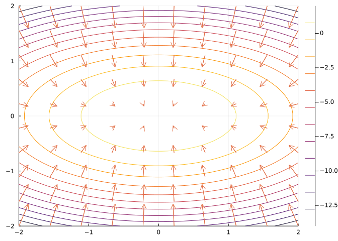
The figure suggests a potential geometric relationship between the gradient and the contour line to be explored later.
We see here how the gradient of \(f\), \(\nabla{f} = \langle f_{x_1}, f_{x_2}, \dots, f_{x_n} \rangle\), plays a similar role as the derivative does for univariate functions.
First, we consider the role of the derivative for univariate functions. The main characterization - the derivative is the slope of the line that best approximates the function at a point - is quantified by Taylor’s theorem. For a function \(f\) with a continuous second derivative:
\[ f(c+h) = f(c) = f'(c)h + \frac{1}{2} f''(\xi) h^2, \]
for some \(\xi\) within \(c\) and \(c+h\).
We re-express this through:
\[ (f(c+h) - f(c)) - f'(c)h =\frac{1}{2} f''(\xi) h^2. \]
The right hand side is the error term between the function value at \(c+h\) and, in this case, the linear approximation at the same value.
If the assumptions are relaxed, and \(f\) is just assumed to be differentiable at \(x=c\), then only this is known:
\[ (f(c+h) - f(c)) - f'(c)h = \epsilon(h) h, \]
where \(\epsilon(h) \rightarrow 0\) as \(h \rightarrow 0\).
It is this characterization of differentiable that is generalized to define when a scalar function is differentiable.
Differentiable: Let \(f\) be a scalar function. Then \(f\) is differentiable at a point \(C\) if the first order partial derivatives exist at \(C\) and for \(\vec{h}\) going to \(\vec{0}\):
\(\|f(C + \vec{h}) - f(C) - \nabla{f}(C) \cdot \vec{h}\| = \mathcal{o}(\|\vec{h}\|),\)
where \(\mathcal{o}(\|\vec{h}\|)\) means that dividing the left hand side by \(\|\vec{h}\|\) and taking a limit as \(\vec{h}\rightarrow 0\) the limit will be \(0\)..
The limits here are for limits of scalar functions, which means along any path going to \(\vec{0}\), not just straight line paths, as are used to define the partial derivatives. Hidden above, is an assumption that there is some open set around \(C\) for which \(f\) is defined for \(f(C + \vec{h})\) when \(C+\vec{h}\) is in this open set.
The role of the derivative in the univariate case is played by the gradient in the scalar case, where \(f'(c)h\) is replaced by \(\nabla{f}(C) \cdot \vec{h}\). For the univariate case, differentiable is simply the derivative existing, but saying a scalar function is differentiable at \(C\) is a stronger statement than saying it has a gradient or, equivalently, it has partial derivatives at \(C\), as this is assumed in the statement along with the other condition.
Later we will see how Taylor’s theorem generalizes for scalar functions and interpret the gradient geometrically, as was done for the derivative (it being the slope of the tangent line).
In finding a partial derivative, we restricted the surface along a curve in the \(x\)-\(y\) plane, in this case the curve \(\vec{\gamma}(t)=\langle t, c\rangle\). In general if we have a curve in the \(x\)-\(y\) plane, \(\vec{\gamma}(t)\), we can compose the scalar function \(f\) with \(\vec{\gamma}\) to create a univariate function. If the functions are “smooth” then this composed function should have a derivative, and some version of a “chain rule” should provide a means to compute the derivative in terms of the “derivative” of \(f\) (the gradient) and the derivative of \(\vec{\gamma}\) (\(\vec{\gamma}'\)).
Chain rule: Suppose \(f\) is differentiable at \(C\), and \(\vec{\gamma}(t)\) is differentiable at \(c\) with \(\vec{\gamma}(c) = C\). Then \(f\circ\vec{\gamma}\) is differentiable at \(c\) with derivative \(\nabla f(\vec{\gamma}(c)) \cdot \vec{\gamma}'(c)\).
This is similar to the chain rule for univariate functions \((f\circ g)'(u) = f'(g(u)) g'(u)\) or \(df/dx = df/du \cdot du/dx\). However, when we write out in components there are more terms. For example, for \(n=2\) we have with \(\vec{\gamma} = \langle x(t), y(t) \rangle\):
\[ \frac{d(f\circ\vec{\gamma})}{dt} = \frac{\partial f}{\partial x} \frac{dx}{dt} + \frac{\partial f}{\partial y} \frac{dy}{dt}. \]
The proof is a consequence of the definition of differentiability and will be shown in more generality later.
Consider the function \(f(x,y) = 2 - x^2 - y^2\) and the curve \(\vec\gamma(t) = t\langle \cos(t), -\sin(t) \rangle\) at \(t=\pi/6\). We visualize this below:
f₃(x,y) = 2 - x^2 - y^2
f₃(x) = f₃(x...)
γ₃(t) = t*[cos(t), -sin(t)]
t0₃ = pi/60.5235987755982988xs = ys = range(-3/2, 3/2, length=100)
surface(xs, ys, f₃, legend=false)
r(t) = [γ₃(t)..., (f₃∘γ₃)(t)]
plot_parametric!(0..1/2, r, linewidth=5, color=:black)
arrow!(r(t0₃), r'(t0₃), linewidth=5, color=:black)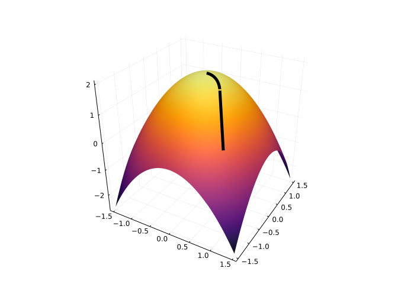
In three dimensions, the tangent line is seen, but the univariate function \(f \circ \vec\gamma\) looks like:
plot(f₃ ∘ γ₃, 0, pi/2)
plot!(t -> (f₃ ∘ γ₃)(t0₃) + (f₃ ∘ γ₃)'(t0₃)*(t - t0₃), 0, pi/2)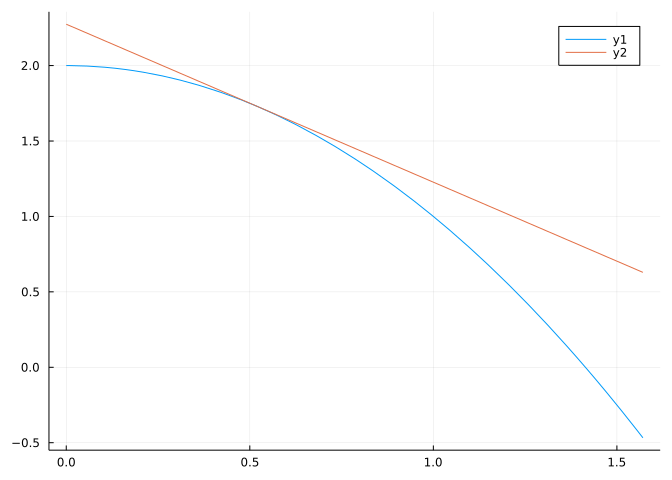
From the graph, the slope of the tangent line looks to be about \(-1\), using the chain rule gives the exact value:
ForwardDiff.gradient(f₃, γ₃(t0₃)) ⋅ γ₃'(t0₃)-1.0471975511965976We can compare this to taking the derivative after composition:
(f₃ ∘ γ₃)'(t0₃)-1.0471975511965976Consider the following plot showing a hiking trail on a surface:
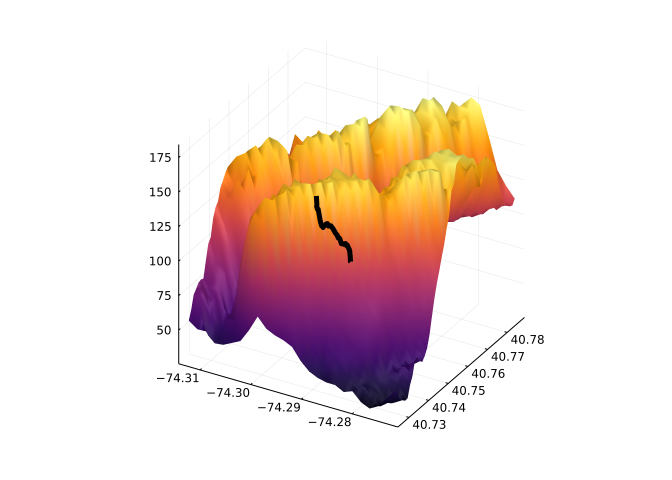
Though here it is hard to see the trail rendered on the surface, for the hiker, such questions are far from the mind. Rather, questions such as what is the steepest part of the trail may come to mind.
For this question, we can answer it in turns of the sampled data in the lenape variable. The steepness being the change in elevation with respect to distance in the \(x\)-\(y\) direction. Treating latitude and longitude coordinates describing motion in a plane (as opposed to a very big sphere), we can compute the maximum steepness:
xs, ys, zs = lenape.longitude, lenape.latitude, lenape.elevation
dzs = zs[2:end] - zs[1:end-1]
dxs, dys = xs[2:end] - xs[1:end-1], ys[2:end] - ys[1:end-1]
deltas = sqrt.(dxs.^2 + dys.^2) * 69 / 1.6 * 1000 # in meters now
global slopes = abs.(dzs ./ deltas) # to re-use
m = maximum(slopes)
atand(maximum(slopes)) # in degrees due to the `d`58.377642682886105This is certainly too steep for a trail, which should be at most \(10\) to \(15\) degrees or so, not \(58\). This is due to the inaccuracy in the measurements. An average might be better:
import Statistics: mean
atand(mean(slopes))8.817002448325248Which seems about right for a generally uphill trail section, as this is.
In the above example, the data is given in terms of a sample, not a functional representation. Suppose instead, the surface was generated by f and the path - in the \(x\)-\(y\) plane - by \(\gamma\). Then we could estimate the maximum and average steepness by a process like this:
f₄(x,y) = 2 - x^2 - y^2
f₄(x) = f₄(x...)
γ₄(t) = t*[cos(t), -sin(t)]γ₄ (generic function with 1 method)xs = ys = range(-3/2, 3/2, length=100)
surface(xs, ys, f₄, legend=false)
r(t) = [γ₄(t)..., (f₄ ∘ γ₄)(t)]
plot_parametric!(0..1/2, r, linewidth=5, color=:black)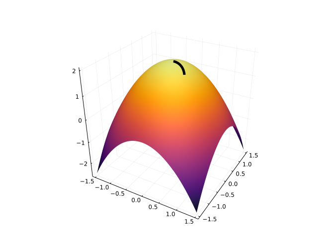
plot(f₄ ∘ γ₄, 0, pi/2)
slope(t) = abs((f₄ ∘ γ₄)'(t))
1/(pi/2 - 0) * quadgk(t -> atand(slope(t)), 0, pi/2)[1] # the average50.585772642502285the average is \(50\) degrees. As for the maximum slope:
cps = find_zeros(slope, 0, pi/2) # critical points
append!(cps, (0, pi/2)) # add end points
unique!(cps)
M, i = findmax(slope.(cps)) # max, index
cps[i], slope(cps[i])(1.5707963267948966, 3.1415926535897927)The maximum slope occurs at an endpoint.
The last example, how steep is the direction we are walking, is a question that can be asked when walking in a straight line in the \(x\)-\(y\) plane. The answer has a simplified answer:
Let \(\vec\gamma(t) = C + t \langle a, b \rangle\) be a line that goes through the point \(C\) parallel, or in the direction of, to \(\vec{v} = \langle a , b \rangle\).
Then the function \(f \circ \vec\gamma(t)\) will have a derivative when \(f\) is differentiable and by the chain rule will be:
\[ (f\circ\vec\gamma)'(\vec\gamma(t)) = \nabla{f}(\vec\gamma(t)) \cdot \vec\gamma'(t) = \nabla{f}(\vec\gamma(t)) \cdot \langle a, b\rangle = \vec{v} \cdot \nabla{f}(\vec\gamma(t)). \]
At \(t=0\), we see that \((f\circ\vec\gamma)'(C) = \nabla{f}(C)\cdot \vec{v}\).
This defines the directional derivative at \(C\) in the direction \(\vec{v}\):
\[ \text{Directional derivative} = \nabla_{\vec{v}}(f) = \nabla{f} \cdot \vec{v}. \]
If \(\vec{v}\) is a unit vector, then the value of the directional derivative is the rate of increase in \(f\) in the direction of \(\vec{v}\).
This is a natural generalization of the partial derivatives, which, in two dimensions, are the directional derivative in the \(x\) direction and the directional derivative in the \(y\) direction.
The following figure shows \(C = (1/2, -1/2)\) and the two curves. Planes are added, as it can be easiest to visualize these curves as the intersection of the surface generated by \(f\) and the vertical planes \(x=C_x\) and \(y=C_y\)
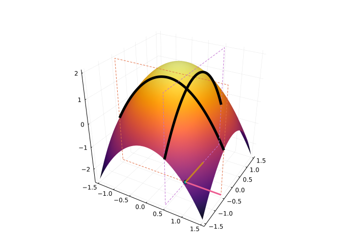
We can then visualize the directional derivative by a plane through \(C\) in the direction \(\vec{v}\). Here we take \(C=(1/2, -1/2)\), as before, and \(\vec{v} = \langle 1, 1\rangle\):
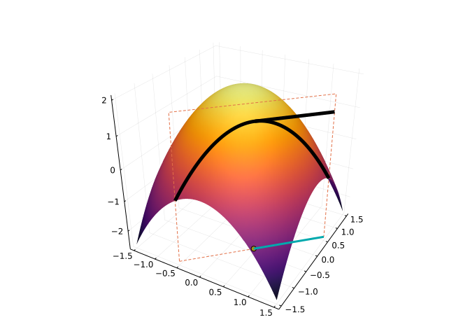
In this figure, we see that the directional derivative appears to be \(0\), unlike the partial derivatives in \(x\) and \(y\), which are negative and positive, respectively.
Let \(f(x,y) = \sin(x+2y)\) and \(\vec{v} = \langle 2, 1\rangle\). The directional derivative of \(f\) in the direction of \(\vec{v}\) at \((x,y)\) is:
\[ \nabla{f}\cdot \frac{\vec{v}}{\|\vec{v}\|} = \langle \cos(x + 2y), 2\cos(x + 2y)\rangle \cdot \frac{\langle 2, 1 \rangle}{\sqrt{5}} = \frac{4}{\sqrt{5}} \cos(x + 2y). \]
Suppose \(f(x,y)\) describes a surface, and \(\vec\gamma(t)\) parameterizes a path in the \(x\)-\(y\) plane. Then the vector valued function \(\vec{r}(t) = \langle \vec\gamma_1(t), \vec\gamma_2(t), (f\circ\vec\gamma)(t)\rangle\) describes a path on the surface. The maximum steepness of the this path is found by maximizing the slope of the directional derivative in the direction of the tangent line. This would be the function of \(t\):
\[ \nabla{f}(\vec\gamma(t)) \cdot \vec{T}(t), \]
Where \(T(t) = \vec\gamma'(t)/\|\vec\gamma'(t)\|\) is the unit tangent vector to \(\gamma\).
Let \(f(x,y) = 2 - x^2 - y^2\) and \(\vec\gamma(t) = (\pi-t) \langle \cos(t), \sin(t) \rangle\). What is the maximum steepness?
We have \(\nabla{f} = \langle -2x, -2y \rangle\) and \(\vec\gamma'(t) = -\langle(\cos(t), \sin(t)) + (\pi-t) \langle(-\sin(t), \cos(t)\rangle\). We maximize this over \([0, \pi]\):
f(x,y) = 2 - x^2 - y^2
f(v) = f(v...)
gamma(t) = (pi-t) * [cos(t), sin(t)]
dd(t) = gradient(f)(gamma(t)) ⋅ gamma'(t)
cps = find_zeros(dd, 0, pi)
unique!(append!(cps, (0, pi))) # add endpoints
M,i = findmax(dd.(cps))
M6.283185307179586Consider this figure showing a surface and a level curve along with a contour line:
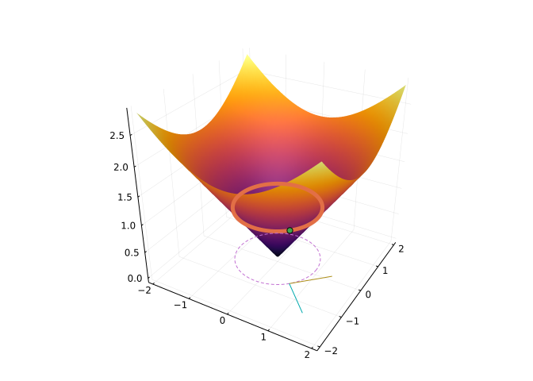
We have the level curve for \(f(x,y) = c\) represented, and a point \((x,y, f(x,y))\) drawn. At the point \((x,y)\) which sits on the level curve, we have indicated the gradient and the tangent curve to the level curve, or contour line. Worth reiterating, the gradient is not on the surface, but rather is a \(2\)-dimensional vector, but it does indicate a direction that can be taken on the surface. We will see that this direction indicates the path of steepest ascent.
The figure suggests a relationship between the gradient and the tangents to the contour lines. Let’s parameterize the contour line by \(\vec\gamma(t)\), assuming such a parameterization exists, let \(C = (x,y) = \vec\gamma(t)\), for some \(t\), be a point on the level curve, and \(\vec{T} = \vec\gamma'(t)/\|\vec\gamma'(t)\|\) be the tangent to to the level curve at \(C\). Then the directional derivative at \(C\) in the direction of \(T\) must be \(0\), as along the level curve, the function \(f\circ \vec\gamma = c\), a constant. But by the chain rule, this says:
\[ 0 = (c)' = (f\circ\vec\gamma)'(t) = \nabla{f}(\vec\gamma(t)) \cdot \vec\gamma'(t) \]
That is the gradient is orthogonal to \(\vec{\gamma}'(t)\). As well, is orthogonal to the tangent vector \(\vec{T}\) and hence to the level curve at any point. (As the dot product is \(0\).)
Now, consider a unit vector \(\vec{v}\) in the direction of steepest ascent at \(C\). Since \(\nabla{f}(C)\) and \(\vec{T}\) are orthogonal, we can express the unit vector uniquely as \(a\nabla{f}(C) + b \vec{T}\) with \(a^2 + b^2 = 1\). The directional derivative is then
\[ \nabla{f} \cdot \vec{v} = \nabla{f} \cdot (a\nabla{f}(C) + b \vec{T}) = a \| \nabla{f} \|^2 + b \nabla{f} \cdot \vec{T} = a \| \nabla{f} \|^2. \]
The will be largest when \(a=1\) and \(b=0\). That is, the direction of greatest ascent in indicated by the gradient. (It is smallest when \(a=-1\) and \(b=0\), the direction opposite the gradient.
In practical terms, if standing on a hill, walking in the direction of the gradient will go uphill the fastest possible way, walking along a contour will not gain any elevation. The two directions are orthogonal.
The chain rule we discussed was for a composition of \(f:R^n \rightarrow R\) with \(\vec\gamma:R \rightarrow R^n\) resulting in a function \(f\circ\vec\gamma:R \rightarrow R\). There are other possible compositions.
For example, suppose we have an economic model for beverage consumption based on temperature given by \(c(T)\). But temperature depends on geographic location, so may be modeled through a function \(T(x,y)\). The composition \(c \circ T\) would be a function from \(R^2 \rightarrow R\), so should have partial derivatives with respect to \(x\) and \(y\) which should be expressible in terms of the derivative of \(c\) and the partial derivatives of \(T\).
Consider a different situation, say we have \(f(x,y)\) a scalar function, but want to consider the position in polar coordinates involving \(r\) and \(\theta\). We can think directly of \(F(r,\theta) = f(r\cdot\cos(\theta), r\cdot\sin(\theta))\), but more generally, we have a function \(G(r, \theta)\) that is vector valued: \(G(r,\theta) = \langle r\cdot\cos(\theta), r\cdot\sin(\theta) \rangle\) (\(G:R^2 \rightarrow R^2\)). The composition \(F=f\circ G\) is a scalar function of \(r\) and \(\theta\) and the partial derivatives with respect to these should be expressible in terms of the partial derivatives of \(f\) and the partial derivatives of \(G\).
Finding the derivative of a composition in terms of the individual pieces involves some form of the chain rule, which will differ depending on the exact circumstances.
If \(f(t)\) is a univariate function and \(G(x,y)\) a scalar function, the \(F(x,y) = f(G(x,y))\) will be a scalar function and may have partial derivatives. If \(f\) and \(G\) are differentiable at a point \(P\), then
\[ \frac{\partial F}{\partial x} = f'(G(x,y)) \frac{\partial G}{\partial x}, \quad \frac{\partial F}{\partial y} = f'(G(x,y)) \frac{\partial G}{\partial y}, \]
and
\[ \nabla{F} = \nabla{f \circ G} = f'(G(x,y)) \nabla{G}(x,y). \]
The result is an immediate application of the univariate chain rule, when the partial functions are considered.
Imagine a scenario where sales of some commodity (say ice) depend on the temperature which in turn depends on location. Formally, we might have functions \(S(T)\) and \(T(x,y)\) and then sales would be the composition \(S(T(x,y))\). How might sales go up or down if one moved west, or one moved in the northwest direction? These would be a directional derivative, answered by \(\nabla{S}\cdot \hat{v}\), where \(\vec{v}\) is the direction. Of importance would be to compute \(\nabla{S}\) which might best be done through the chain rule.
For example, if \(S(T) = \exp((T - 70)/10)\) and \(T(x,y) = (1-x^2)\cdot y\), the gradient of \(S(T(x,y))\) would be given by:
\[ S'(T(x,y)) \nabla{T}(x,y) = (S(T(x,y))/10) \langle(-2xy, 1-x^2 \rangle. \]
If \(G(u_1, \dots, u_m) = \langle G_1, G_2,\dots, G_n\rangle\) is a function of \(m\) inputs that returns \(n\) outputs we may view it as \(G: R^m \rightarrow R^n\). The composition with a scalar function \(f(v_1, v_2, \dots, v_n)=z\) from \(R^n \rightarrow R\) creates a scalar function from \(R^m \rightarrow R\), so the question of partial derivatives is of interest. We have:
\[ \frac{\partial (f \circ G)}{\partial u_i} = \frac{\partial f}{\partial v_1} \frac{\partial G}{\partial u_i} + \frac{\partial f}{\partial v_2} \frac{\partial G}{\partial u_i} + \dots + \frac{\partial f}{\partial v_n} \frac{\partial G}{\partial u_i}. \]
The gradient is then:
\[ \nabla(f\circ G) = \frac{\partial f}{\partial v_1} \nabla{G_1} + \frac{\partial f}{\partial v_2} \nabla{G_2} + \dots + \frac{\partial f}{\partial v_n} \nabla{G_n} = \nabla(f) \cdot \langle \nabla{G_1}, \nabla{G_2}, \dots, \nabla{G_n} \rangle, \]
The last expression is a suggestion, as it is an abuse of previously used notation: the dot product isn’t between vectors of the same type, as the rightmost vector is representing a vector of vectors. The Jacobian matrix combines these vectors into a rectangular array, though with the vectors written as row vectors. If \(G: R^m \rightarrow R^n\), then the Jacobian is the \(n \times m\) matrix with \((i,j)\) entry given by \(\partial G_i, \partial u_j\):
\[ J = \left[ \begin{align} \frac{\partial G_1}{\partial u_1} & \frac{\partial G_1}{\partial u_2} & \dots \frac{\partial G_1}{\partial u_m}\\ \frac{\partial G_2}{\partial u_1} & \frac{\partial G_2}{\partial u_2} & \dots \frac{\partial G_2}{\partial u_m}\\ & \vdots & \\ \frac{\partial G_n}{\partial u_1} & \frac{\partial G_n}{\partial u_2} & \dots \frac{\partial G_n}{\partial u_m} \end{align} \right]. \]
With this notation, and matrix multiplication we have \((\nabla(f\circ G))^t = \nabla(f)^t J\).
(Later, we will see that the chain rule in general has a familiar form using matrices, not vectors, which will avoid the need for a transpose.)
Let \(f(x,y) = x^2 + y^2\) be a scalar function. We have if \(G(r, \theta) = \langle r\cos(\theta)(, r\sin(\theta) \rangle\) then after simplification, we have \((f \circ G)(r, \theta) = r^2\). Clearly then \(\partial(f\circ G)/\partial r = 2r\) and \(\partial(f\circ G)/\partial \theta = 0\).
Were this computed through the chain rule, we have:
\[ \begin{align} \nabla G_1 &= \langle \frac{\partial r\cos(\theta)}{\partial r}, \frac{\partial r\cos(\theta)}{\partial \theta} \rangle= \langle \cos(\theta), -r \sin(\theta) \rangle,\\ \nabla G_2 &= \langle \frac{\partial r\sin(\theta)}{\partial r}, \frac{\partial r\sin(\theta)}{\partial \theta} \rangle= \langle \sin(\theta), r \cos(\theta) \rangle. \end{align} \]
We have \(\partial f/\partial x = 2x\) and \(\partial f/\partial y = 2y\), which at \(G\) are \(2r\cos(\theta)\) and \(2r\sin(\theta)\), so by the chain rule, we should have
\[ \begin{align} \frac{\partial (f\circ G)}{\partial r} &= \frac{\partial{f}}{\partial{x}}\frac{\partial G_1}{\partial r} + \frac{\partial{f}}{\partial{y}}\frac{\partial G_2}{\partial r} = 2r\cos(\theta) \cos(\theta) + 2r\sin(\theta) \sin(\theta) = 2r (\cos^2(\theta) + \sin^2(\theta)) = 2r, \\ \frac{\partial (f\circ G)}{\partial \theta} &= \frac{\partial f}{\partial x}\frac{\partial G_1}{\partial \theta} + \frac{\partial f}{\partial y}\frac{\partial G_2}{\partial \theta} = 2r\cos(\theta)(-r\sin(\theta)) + 2r\sin(\theta)(r\cos(\theta)) = 0. \end{align} \]
If \(f:R^n \rightarrow R\), the \(\partial f/\partial x_i\) takes \(R^n \rightarrow R\) too, so may also have a partial derivative.
Consider the case \(f: R^2 \rightarrow R\), then there are \(4\) possible partial derivatives of order 2: partial in \(x\) then \(x\), partial in \(x\) then \(y\), partial in \(y\) and then \(x\), and, finally, partial in \(y\) and then \(y\).
The notation for the partial in \(y\) of the partial in \(x\) is:
\[ \frac{\partial^2 f}{\partial{y}\partial{x}} = \frac{\partial{\frac{\partial{f}}{\partial{x}}}}{\partial{y}} = \frac{\partial f_x}{\partial{y}} = f_{xy}. \]
The placement of \(x\) and \(y\) indicating the order is different in the two notations.
We can compute these for an example easily enough:
@syms x y
f(x, y) = exp(x) * cos(y)
ex = f(x,y)
diff(ex, x, x), diff(ex, x, y), diff(ex, y, x), diff(ex, y, y)(exp(x)*cos(y), -exp(x)*sin(y), -exp(x)*sin(y), -exp(x)*cos(y))In SymPy the variable to differentiate by is taken from left to right, so diff(ex, x, y, x) would first take the partial in \(x\), then \(y\), and finally \(x\).
We see that diff(ex, x, y) and diff(ex, y, x) are identical. This is not a coincidence, as by Schwarz’s Theorem (also known as Clairaut’s theorem) this will always be the case under typical assumptions:
Theorem on mixed partials. If the mixed partials \(\partial^2 f/\partial x \partial y\) and \(\partial^2 f/\partial y \partial x\) exist and are continuous, then they are equal.
For higher order mixed partials, something similar to Schwarz’s theorem still holds. Say \(f:R^n \rightarrow R\) is \(C^k\) if \(f\) is continuous and all partial derivatives of order \(j \leq k\) are continous. If \(f\) is \(C^k\), and \(k=k_1+k_2+\cdots+k_n\) (\(k_i \geq 0\)) then
\[ \frac{\partial^k f}{\partial x_1^{k_1} \partial x_2^{k_2} \cdots \partial x_n^{k_n}}, \]
is uniquely defined. That is, which order the partial derivatives are taken is unimportant if the function is sufficiently smooth.
The Hessian matrix is the matrix of mixed partials defined (for \(n=2\)) by:
\[ H = \left[ \begin{align} \frac{\partial^2 f}{\partial x \partial x} & \frac{\partial^2 f}{\partial x \partial y}\\ \frac{\partial^2 f}{\partial y \partial x} & \frac{\partial^2 f}{\partial y \partial y} \end{align} \right]. \]
For symbolic expressions, the Hessian may be computed directly in SymPy with its hessian function:
exhessian(ex, (x, y))2×2 Matrix{Sym}:
exp(x)*cos(y) -exp(x)*sin(y)
-exp(x)*sin(y) -exp(x)*cos(y)When the mixed partials are continuous, this will be a symmetric matrix. The Hessian matrix plays the role of the second derivative in the multivariate Taylor theorem.
For numeric use, FowardDiff has a hessian function. It expects a scalar function and a point and returns the Hessian matrix. We have for \(f(x,y) = e^x\cos(y)\) at the point \((1,2)\), the Hessian matrix is:
f(x,y) = exp(x) * cos(y)
f(v) = f(v...)
pt = [1, 2]
ForwardDiff.hessian(f, pt) # symmetric2×2 Matrix{Float64}:
-1.1312 -2.47173
-2.47173 1.1312Consider the graph of a function \(z= f(x,y)\) presented below:
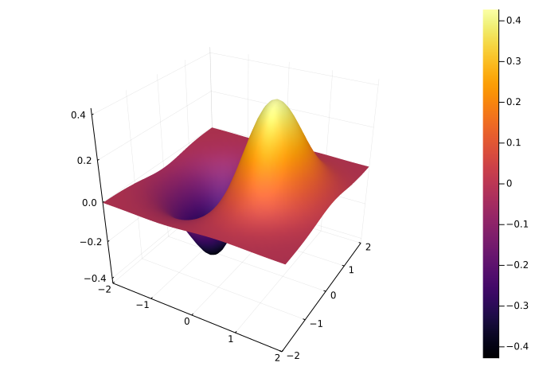
From the graph, is the value of \(f(1/2, 1)\) positive or negative?
On which line is the function \(0\):
Consider the contour plot
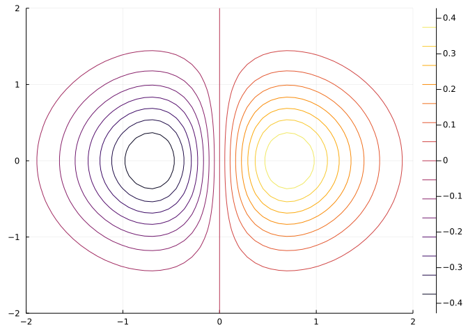
What is the value of \(f(1, 0)\)?
From this graph, the minimum value over this region is
From this graph, where is the surface steeper?
Consider the contour graph of a function below:
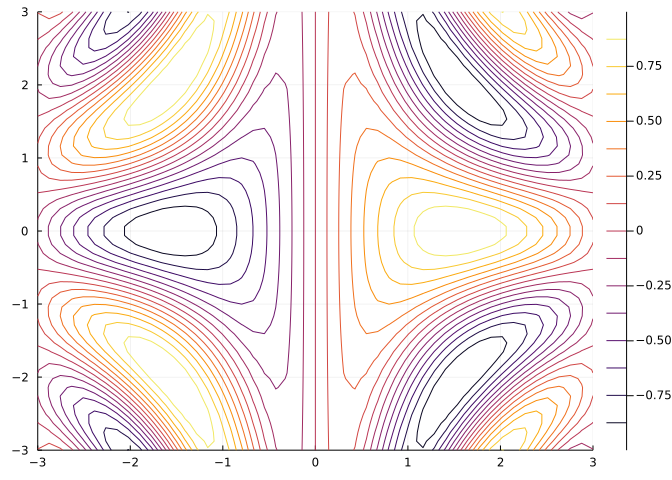
Are there any peaks or valleys (local extrema) indicated?
Imagine hiking on this surface within this region. Could you traverse from left to right without having to go up or down?
Imagine hiking on this surface within this region. Could you traverse from top to bottom without having to go up or down?
The figure (taken from openstreetmap.org shows the Stelvio Pass in Northern Italy near the Swiss border.

The road through the pass (on the right) makes a series of switch backs.
Are these
Why?
The pass is at about 2700 meters. As shown towards the top and bottom of the figure the contour lines show increasing heights, and to the left and right decreasing heights. The shape of the pass would look like:
Limits of scalar functions have the same set of rules as limits of univariate functions. These include limits of constants; limits of sums, differences, and scalar multiples; limits of products; and limits of ratios. The latter with the provision that division by \(0\) does not occur at the point in question.
Using these, identify any points where the following limit may not exist, knowing the limits of the individual functions exist at \(\vec{c}\):
\[ \lim_{\vec{x} \rightarrow \vec{x}} \frac{af(\vec{x})g(\vec{x}) + bh(\vec{x})}{ci(\vec{x})}. \]
Let \(f(x,y) = (x^2 - y^2) /(x^2 + y^2)\).
Fix \(y=0\). What is \(\lim_{x \rightarrow 0} f(x,0)\)?
Fix \(x=0\). What is \(\lim_{y \rightarrow 0} f(0, y)\)?
The two paths technique shows a limit does not exist by finding two paths with different limits as \(\vec{x}\) approaches \(\vec{c}\). Does this apply to \(\lim_{\langle x,y\rangle \rightarrow\langle 0, 0 \rangle}f(x,y)\)?
Let \(f(x,y) = \langle \sin(x)\cos(2y), \sin(2x)\cos(y) \rangle\)
Compute \(f_x\)
Compute \(f_y\)
Let \(f(x,y) = x^{y\sin(xy)}\). Using ForwardDiff, at the point \((1/2, 1/2)\), compute the following.
The value of \(f_x\):
The value of \(\partial{f}/\partial{y}\):
Let \(z = f(x,y)\) have gradient \(\langle f_x, f_y \rangle\).
The gradient is:
The surface is:
The gradient points in the direction of greatest increase of \(f\). If a person were on a hill described by \(z=f(x,y)\), what three dimensional vector would they follow to go the steepest way up the hill?
The figure shows climbers on their way to summit Mt. Everest:
If the surface of the mountain is given by a function \(z=f(x,y)\) then the climbers move along a single path parameterized, say, by \(\vec{\gamma}(t) = \langle x(t), y(t)\rangle\), as set up by the Sherpas.
Consider the composition \((f\circ\vec\gamma)(t)\).
For a climber with GPS coordinates \((x,y)\). What describes her elevation?
A climber leaves base camp at \(t_0\). At time \(t > t_0\), what describes her elevation?
What does the vector-valued function \(\vec{r}(t) = \langle x(t), y(t), (f\circ\vec\gamma(t))\rangle\) describe:
In the figure, the climbers are making a switch back, so as to avoid the steeper direct ascent. Mathematically \(\nabla{f}(\vec\gamma(t)) \cdot \vec\gamma'(t)\) describes the directional derivative that they follow. Using \(\|\vec{u}\cdot\vec{v}\| = \|\vec{u}\|\|\vec{v}\|\cos(\theta)\), does this route:
Suppose our climber reaches the top at time \(t\). What would be \((f\circ\vec\gamma)'(t)\), assuming the derivative exists?
Building sustainable hiking trails involves proper water management. Two rules of thumb are 1) the trail should not be steeper than 10 degrees 2) the outward slope (in the steepest downhill direction) should be around 5%. (A trail tread is not flat, but rather sloped downward, similar to the crown on a road, so that water will run to the downhill side of the tread, not along the tread, which would cause erosion. In the best possible world, the outslope will exceed the downward slope.)
Suppose a trail height is described parametrically by a composition \((f \circ \vec\gamma)(t))\), where \(\vec\gamma(t) = \langle x(t),y(t)\rangle\). The vector \(\vec{T}(t) = \langle x(t), y(t), \nabla{f}(\vec\gamma(t)) \rangle\) describes the tangent to the trail at a point (\(\vec\gamma(t)\)). Let \(\hat{T}(t)\) be the unit normal, and \(\hat{P}(t)\) be a unit normal in the direction of the projection of \(\vec{T}\) onto the \(x\)-\(y\) plane. (Make the third component of \(\vec{T}\) \(0\), and then form a unit vector from that.)
What expression below captures point 1 that the steepness should be no more than 10 degrees (\(\pi/18\) radians):
The normal to the surface \(z=f(x,y)\) is not the normal to the trail tread. Suppose \(\vec{N}(t)\) is a function that returns this. At the same point \(\vec\gamma(t)\), let \(\vec{M} = \langle -f_x, -f_y, 0\rangle\) be a vector in 3 dimensions pointing downhill. Let “hats” indicate unit vectors. The outward slope is \(\pi/2\) minus the angle between \(\hat{N}\) and \(\hat{M}\). What condition will ensure this angle is \(5\) degrees (\(\pi/36\) radians)?
Let \(f(x,y) = x^2 \cdot(x - y^2)\). Let \(\vec{v} = \langle 1, 2\rangle\). Find the directional derivative in the direction of \(\vec{v}\).
Let \(\vec{v}\) be any non-zero vector. Does \(\nabla{f}(\vec{x})\cdot\vec{v}\) give the rate of increase of \(f\) per unit of distance in the direction of \(\vec{v}\)?
Let \(f(x,y,z) = x^4 + 2xz + 2xy + y^4\) and \(\vec\gamma(t) = \langle t, t^2, t^3\rangle\). Using the chain rule, compute \((f\circ\vec\gamma)'(t)\).
The value of \(\nabla{f}(x,y,z)\) is
The value of \(\vec\gamma'(t)\) is:
The value of \((f\circ\vec\gamma)'(t)\) is found by:
Let \(z = f(x,y)\) be some unknown function,
From the figure, which drawn vector is the gradient at \((1/2, -3/4)\)?
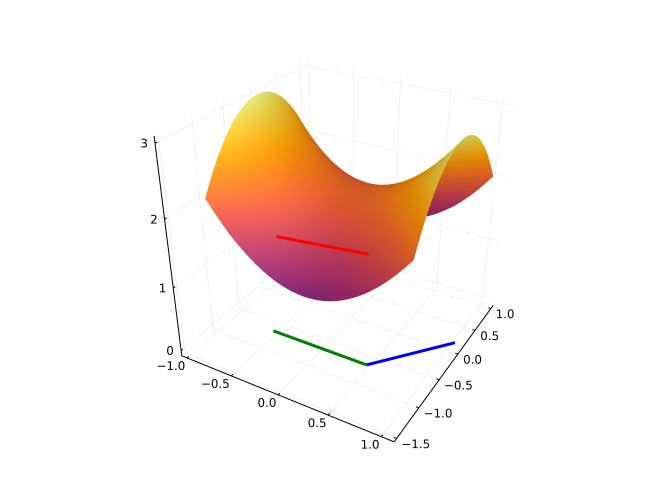
From the figure, which drawn vector is the gradient as \((1/2, -3/4)\)?
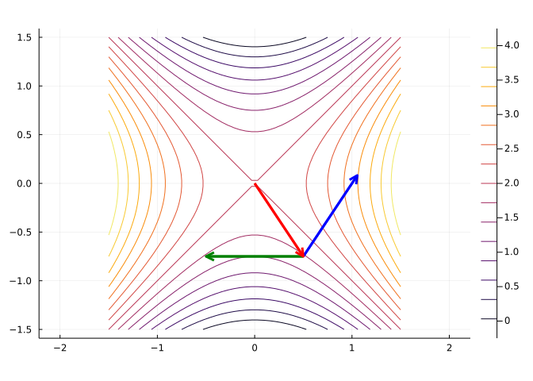
For a function \(f(x,y)\) and a point (as a vector, \(\vec{c}\)) we consider this derived function:
\[ g(\vec{x}) = f(\vec{c}) + \nabla{f}(\vec{c}) \cdot(\vec{x} - \vec{c}) + \frac{1}{2}(\vec{x} - \vec{c})^tH(\vec{c})(\vec{x} - \vec{c}), \]
where \(H(\vec{c})\) is the Hessian.
Further, suppose \(\nabla{f}(\vec{c}) = \vec{0}\), so in fact:
\[ g(\vec{x}) = f(\vec{c}) + \frac{1}{2}(\vec{x} - \vec{c})^tH(\vec{c})(\vec{x} - \vec{c}). \]
If \(f\) is a linear function at \(\vec{c}\), what does this say about \(g\)?
Suppose, \(H\) has the magic property that for any vector \(\vec{v}^tH\vec{v} < 0\). What does this imply:
Let \(f(x,y) = x^3y^3\). Which partial derivative is identically \(0\)?
Let \(f(x,y) = 3x^2 y\).
Which value is greater at the point \((1/2,2)\)?
The order of partial derivatives matters if the mixed partials are not continuous. Take
\[ f(x,y) = \frac{xy ( x^2 - y^2)}{x^2 + y^2}, \quad f(0,0) = 0 \]
Using the definition of the derivative from a limit, we have
\[ \frac{\partial \frac{\partial f}{\partial x}}{ \partial y} = \lim_{\Delta y \rightarrow 0} \lim_{\Delta x \rightarrow 0} \frac{f(x+\Delta x, y + \Delta y) - f(x, y+\Delta{y}) - f(x+\Delta x,y) + f(x,y)}{\Delta x \Delta y}. \]
Whereas,
\[ \frac{\partial \frac{\partial f}{\partial y}}{ \partial x} = \lim_{\Delta x \rightarrow 0} \lim_{\Delta y \rightarrow 0} \frac{f(x+\Delta x, y + \Delta y) - f(x, y+\Delta{y}) - f(x+\Delta x,y) + f(x,y)}{\Delta x \Delta y}. \]
At \((0,0)\) what is $ $?
At \((0,0)\) what is $ $?
Away from \((0,0)\) the mixed partial is \(\frac{x^{6} + 9 x^{4} y^{2} - 9 x^{2} y^{4} - y^{6}}{x^{6} + 3 x^{4} y^{2} + 3 x^{2} y^{4} + y^{6}}\).
Knill. Clairaut’s theorem is the name given to the fact that if the partial derivatives are continuous, the mixed partials are equal, \(f_{xy} = f_{yx}\).
Consider the following code which computes the mixed partials for the discrete derivative:
@syms x::real y::real Δ::real G()
Dx(f,h) = (subs(f, x=>x+h) - f)/h
Dy(f,h) = (subs(f, y=>y+h) - f)/h
Dy(Dx(G(x,y), Δ), Δ) - Dx(Dy(G(x,y), Δ), Δ)What does this simplify to?
Is continuity required for this to be true?
(Examples and descriptions from Krill)
What equation does the function \(f(x,y) = x^3 - 3xy^2\) satisfy?
What equation does the function \(f(t, x) = sin(x-t) + sin(x+t)\) satisfy?
What equation does the function \(f(t, x) = e^{-(x+t)^2}\) satisfy?
What equation does the function \(f(x,y) = \cos(x) + \sin(y)\) satisfy?